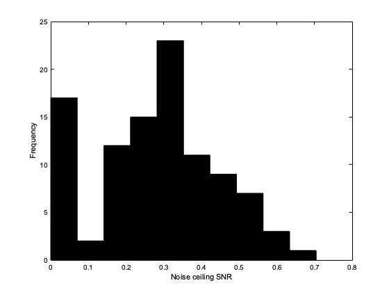
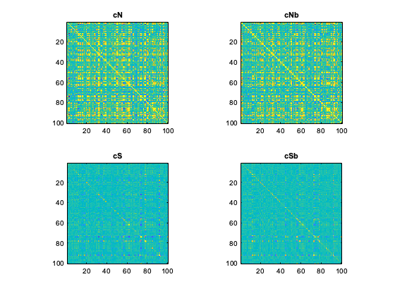
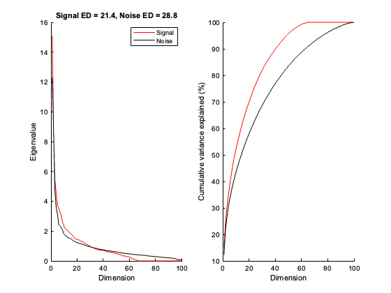

Contents
Example 1: Using GSN to estimate signal and noise
% GSN is a method that estimates signal and noise distributions that % underlie neural response measurements. % % The purpose of this Example 1 is to guide the user through basic calls % to GSN, using a representative, small-scale test dataset. The goal is % to show the full process of calling GSN, inspecting noise ceiling (ncsnr) % values, visualizing signal and noise covariance matrices, and performing PCA. % % Users encountering bugs, unexpected outputs, or other issues regarding % GSN shouldn't hesitate to raise an issue on GitHub: % https://github.com/cvnlab/GSN/issues % % The example data have dimensionality 100 voxels x 200 conditions x 3 trials. % The data are from an fMRI experiment measuring responses to auditory % sentences. The values reflect fMRI response amplitudes in percent BOLD % signal change units. The voxels are taken from a language-selective % brain region in the left hemisphere.
PREPARE AND DOWNLOAD THE DATA
% Start fresh clear clc close all this_dir = fileparts(which('example1.m')); % Add path to GSN run(fullfile(this_dir, '..', '..', 'setup.m')); % Download files to data directory input_dir = fullfile(this_dir, 'data'); if ~exist(input_dir, 'dir') mkdir('data') end input_file = fullfile(input_dir, 'exampledata.mat'); URL = 'https://osf.io/download/97r6d/'; download_data(URL, input_file);
APPLY GSN TO THE DATA
% Load data
a1 = load(input_file)
a1 =
struct with fields:
data: [100x200x3 double]
% a1.data contains 100 voxels x 200 conditions x 3 trials. % The values are fMRI response amplitudes in percent signal change units. % Perform GSN. % We explicitly set the wantshrinkage flag to 1 (true). results = performgsn(a1.data,struct('wantshrinkage',1))
Estimating noise covariance...done.
Estimating data covariance...done.
Estimating signal covariance...done.
Performing biconvex optimization...done.
Performing Monte Carlo simulations...done.
results =
struct with fields:
mnN: [0 0 0 0 0 0 0 0 0 0 0 0 0 0 0 0 0 0 0 0 ... ] (1x100 double)
cN: [100x100 double]
cNb: [100x100 double]
shrinklevelN: 0.94
shrinklevelD: 0.72
mnS: [1.36383054492374 0.744548512815187 ... ] (1x100 double)
cS: [100x100 double]
cSb: [100x100 double]
ncsnr: [0.410226666174017 0.272800960072921 ... ] (1x100 double)
% We have several outputs in results: % mnN is the mean of the noise distribution % cN is the raw estimate of the covariance of the noise distribution % cNb is the final estimate of the covariance of the noise distribution % mnS is the mean of the signal distribution % cS is the raw estimate of the covariance of the signal distribution % cSb is the final estimate of the covariance of the signal distribution % shrinklevelN is the shrinkage fraction used when estimating the noise distribution % shrinklevelD is the shrinkage fraction used when estimating the data distribution % ncsnr is the noise ceiling snr for each voxel (signal sd divided by noise sd) % Notice that the noise covariance estimate involved some shrinkage: results.shrinklevelN
ans =
0.94
% Notice that the data covariance estimate involved some shrinkage:
results.shrinklevelD
ans =
0.72
VISUALIZE THE RESULTS
% Let's take a look at ncsnr figure; hist(results.ncsnr); xlabel('Noise ceiling SNR'); ylabel('Frequency');
% Things look good as there are plenty of voxels with positive ncsnr. % Some ncsnr values are 0. This indicates that these voxels apparently % do not seem to have any signal. % Let's visualize the covariance estimates rng = [-.5 .5]; figure; % this is the noise covariance estimate subplot(2,2,1); imagesc(results.cN,rng); axis image tight; colormap(parula); title('cN'); % this is the final noise covariance estimate subplot(2,2,2); imagesc(results.cNb,rng); axis image tight; colormap(parula); title('cNb'); % this is the signal covariance estimate subplot(2,2,3); imagesc(results.cS,rng); axis image tight; colormap(parula); title('cS'); % this is the final signal covariance estimate subplot(2,2,4); imagesc(results.cSb,rng); axis image tight; colormap(parula); title('cSb');
% Notice that the diagonals of the noise covariance are stronger than the diagonals % of the signal covariance. This means the noise is larger in magnitude than the % signal. This is consistent with our earlier look at ncsnr. % % Also, notice final covariance estimates (cNb and cSb) look similar to % the raw covariance estimates (cN and cS). % However, there are some differences: corr(results.cN(:),results.cNb(:))
ans =
0.999951214797784
corr(results.cS(:),results.cSb(:))
ans =
0.954989098989961
PERFORM PCA
% Define a function to compute effective dimensionality edfun = @(x) sum(x)^2/sum(x.^2); % For the estimated signal covariance and the estimated noise covariance, % convert to correlation units and then compute eigenspectra and eigenvectors. [uS,sS,vS] = svd(convertcovariancetocorrelation(results.cSb),0); [uN,sN,vN] = svd(convertcovariancetocorrelation(results.cNb),0); % Note that svd can be performed on the original covariance (as opposed to % the correlation version). The results will be different, and reflect a % different interpretation. By converting to correlation, we are giving % each voxel equal influence in the signal correlation matrix and in the % noise correlation matrix, even though there may be variations in the % signal and noise variances associated with different voxels in the % original (non-normalized) data. % Visualize the eigenspectra figure; subplot(1,2,1); hold on; h = []; h(1) = plot(diag(sS),'r-'); h(2) = plot(diag(sN),'k-'); title(sprintf('Signal ED = %.1f, Noise ED = %.1f',edfun(diag(sS)),edfun(diag(sN)))); legend(h,{'Signal' 'Noise'}); xlabel('Dimension'); ylabel('Eigenvalue'); subplot(1,2,2); hold on; plot(cumsum(diag(sS))/sum(diag(sS))*100,'r-'); plot(cumsum(diag(sN))/sum(diag(sN))*100,'k-'); xlabel('Dimension'); ylabel('Cumulative variance explained (%)');
% Notice that the noise has higher dimensionality than the signal.